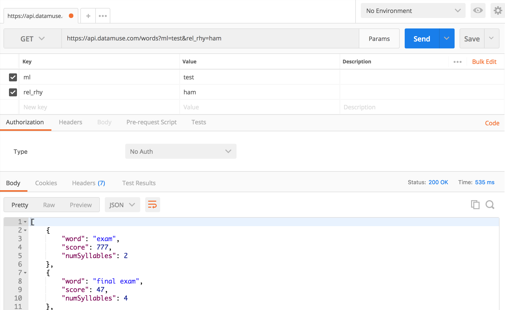
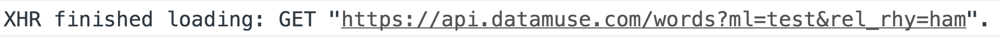
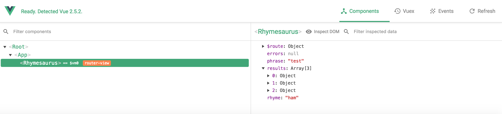
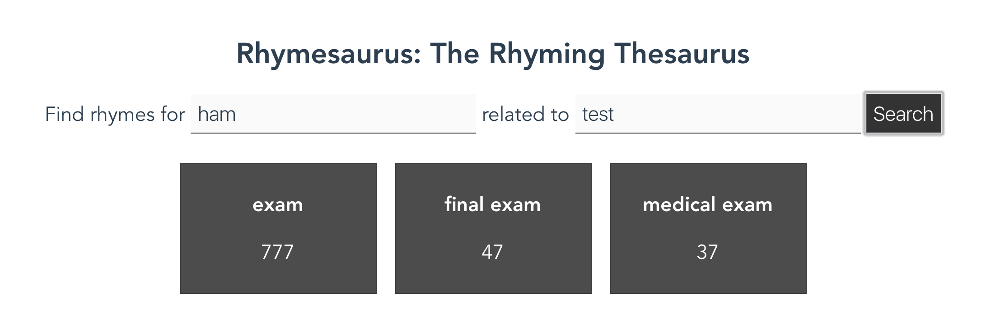
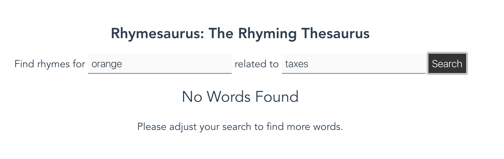
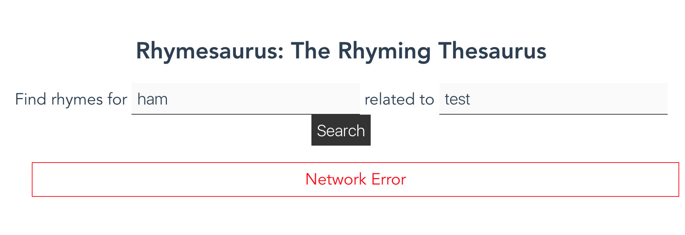

Project: Using API Data
In this project, we will use the Using APIs repository as our starting point. This project asks us to create a rhyming thesaurus using the Datamuse API. The Datamuse API is a wonderful tool that allows us to do all sorts of interesting look-ups to find suggested words. In this project, we will be looking for words that rhyme with one word (or phrase), but which also have some relation to another word (or phrase): a rhyming thesaurus. This is a tool that could be incredibly useful for poets, songwriters, battle rappers, and many others.
Please note: There are many features in the Datamuse API that can be used to create other types of applications ranging from avant garde algorithmic poetry to pragmatic, helpful writing tools. Feel free to explore the many possibilities of this free and open API.
Review the Requirements
This project requires us to make an API call when the user clicks a search button. We want to take some input from the user, which we will use to form our API request. First, we will walk through tasks outlined in the Rhymesaurus.vue file, which guides us toward creating the rhyming thesaurus interface. Then, we are asked to create a brand new Vue.js component that makes use of a different API call to the Datamuse API. Our goal is to link together the Rhymesaurus and our new tool within our site so users can access whichever they need.
Here are the Basic Requirements from the project's README.md file:
/src/components/Rhymesaurus.vue
<template>
- Set up an event handler to trigger the
findWordsmethod when theformis submitted - Use a conditional to control the display of the
ul.resultselement so it only displays when results are ready to be shown - Use a loop to process all of the results into list items
- Output the word in each list item
- Output the score for each word in each list item
- Use a conditional to control the display of the
.no-resultsmessage, which should only show when the user has attempted a search and no words have been found - Use a conditional to control the display of the
ul.errorselement so it only displays when there are errors ready to be shown - Use a loop to process all of the errors and display them for the user
<script>
- Import axios for use in the component logic
- Create a method called
findWords(don't neglect to add themethodsattribute to this component) - Within the
findWordsmethod, create anaxios.get()statement that will make a request tohttps://api.datamuse.com/words- Define the
paramsforml(which should map to thephrase) andrel_rhy(which should map to therhyme) - Define a
thenclause that sets the component'sresultsvalue to the value ofresponse.data - Define a
catchclause that will add any error to theerrorsarray in the component
- Define the
/src/components/NewComponent.vue
(Please do not actually name the new component NewComponent.vue. This name is only being used for reference here. Name the component according to whatever feature it provides.)
- Create a new component (use the boilerplate component code, or copy the component you just created)
- Refer to the Datamuse API documentation to determine a way to modify your code to provide an alternative way to find words (e.g. "sounds like", "related to", "adjectives that go with a word", "words that often follow a word", etc.).
- Implement a similar interface to perform this new search
- Create the necessary template to allow the user to enter at least one search parameter
- Create the necessary method to handle the form submission and API request
- Implement the proper template elements to output the results to the user
- Show all relevant results returned by the API
- Show all errors to the user
- Show a message when no results have been found, so the user knows the system is working even though the data is not there
/src/router/index.js
- Add the new component to the import statements in the router definitions file
- Add the new route to the router definitions list (use a sensible URL and name for it)
both /src/compnents/Rhymesaurus.vue and /src/components/NewComponent.vue
- Add navigation elements to provide links between the two search pages
- Use proper
router-linktags to create links - Allow the user to easily switch between the two pages in the application.
Working the Project
For this project walkthrough, we will focus on the initial work to complete the rhyming thesaurus. After we finish that work, we will offer some guidance to putting together the new component, but that will primarily be left as a challenge to complete based on understanding from previous sections and projects. Refer back to how we previously created new components and set up new route definitions in the Responding to User Input project.
Set Up the API Request
Rather than jumping immediately into the template work, it's probably more streamlined for us to write the API request so we can test it as we build out our template features. The first TODO in the <script> area of the Rhymesaurus.vue component asks us to import axios for use in our findWords method. Assuming we have installed axios in the project with the standard npm install --save axios command, this import statement should work:
import axios from 'axios';
That makes the axios object available within our component logic, so we can then write the findWords method. To add the findWords method, we must create the methods property on the component object. Then, we can define findWords like so:
methods: {
findWords: function(){
axios.get('https://api.datamuse.com/words', {
params: {
ml: this.phrase,
rel_rhy: this.rhyme
}
})
.then(response => {
this.results = response.data;
})
.catch(error => {
this.errors.push(error);
});
}
}
As we can see, findWords is a fairly simple method that uses axios to make a call to the Datamuse API. The request to the API is formed around the ml and rel_rhy parameters. These two parameters are explained in the Datamuse API Documentation (keep that link handy because we'll refer to it later on, when we build our new component). The ml parameter indicates "means like", which returns synonyms for words and phrases. The rel_rhy parameter attempts to find words that rhyme with the supplied words. By combining these parameters we can find words or phrases that are synonymous with this.phrase and which also rhyme with this.rhyme.
Notice that in addition to the URL for the API request, we have also supplied a configuration object in the axios.get() call. This configuration object only specifies params at the moment, but if we needed we could specify other types of configuration options (e.g. headers, transformResponse functions, etc.). It's critical that the params property names match the parameter names used by whatever API we are calling (in this case, the Datamuse API). Refer to the API documentation for the specific names an API uses and then use those in the params object when setting up axios requests.
This is an example of the kind of unorthodox tool we can build by using discrete features of an API. There are plenty of tools and books to look up rhymes for words (we call them "rhyming dictionaries"). And there are tools and books to look up synonymous words (we call that a "thesaurus"). But what we are creating here is a "rhyming thesaurus" (or "Rhymesaurus"), which is a much more unusual type of tool. It's also the kind of cross-lookup that would be difficult to replicate in print, making it especially suitable for building as a software application.
If we are using Postman (which we should be using) to test our API queries, we can try something like this:
https://api.datamuse.com/words?ml=test&rel_rhy=ham
This API request should return words that are synonymous with "test" and also rhyme with "ham". The list should include "exam" and variations on that word. If we test that query in Postman, we can see the results we hope for:

API Results in Postman
Now that we have verified our API results using Postman, and we have set up our API call using axios, we can continue to edit the template.
Rhymesaurus Form
In the template we primarily need to set up the input form and then the output of the results and any potential errors. We also want to let our user know if the API request completed successfully, but no words were found. (If we don't let our user know that no words were found, then they are almost guaranteed to perceive that case as a breakage in our software.)
To do this, we must first set up the event listener to handle the form submission event. This follows the same pattern we used in the previous project:
<form v-on:submit.prevent="findWords">
Again, we are using the v-on directive, and we specify the submit event. We use the .prevent modifier to prevent all of the default event handlers from executing. Finally, we specify the findWords method to handle the form submission event. Whenever the form is submitted, findWords will be executed.
Once we have set up the form submission handler, we must connect our form fields to our component data. As with the previous project, we will use the v-model directive to do that:
<p>Find rhymes for <input type="text" v-model="rhyme"> related to <input type="text" v-model="phrase"> <button type="submit">Search</button></p>
There is not much special about this implementation. We reference the rhyme and phrase values in the data object. It's important to remember that these values must be initialized in the content data object in order to be used in the template like this.
To Form or Not to Form
It is possible to use HTML input fields and buttons to simulate a form experience using only a v-on:click directive on the button. This can work, but it only works when the button is clicked. By using the form, and tracking the form submission event instead of the button click event, we leverage the default behavior of forms in the web browser to allow users to press the Enter/Return button to submit the form. This is a nice enhancement that works better for users who prefer keyboard navigation of a website (often either users with accessibility needs or power users who want greater efficiency). Where possible, it's usually better to use a fully defined form to handle user-submitted data.
Now that we have the form wired up to the proper component data values and the proper form submission handler, we can test our page in the browser. When we click search, we will not see any results (because we haven't written that part yet) but we will see the XHR request made by Axios in the devtools console:

XHR Request in Devtools Console
We can also see the information in the Vue Devtools tab. After we have made the request we can see that the results value is populated as an Array with 3 items:

Vue Devtools Results
Now we can set up the output of this information for the user to view.
Data Output in Template
To output the data, we will create a list of items. The list will use the .results class to label it and control styling. We will make a loop using the v-for directive on each of the list items. In the end, it will look like this:
<ul v-if="results && results.length > 0" class="results">
<li v-for="item of results">
<p><strong>{{item.word}}</strong></p>
<p>{{item.score}}</p>
</li>
</ul>
We want to hide the list until we have results. We also want to hide the list if we have zero results returned from the API. We can notice that results is initialized to null, which means that until the user triggers a form submission event the results will not show. Once the findWords function is executed, results will be an Array. If it has any items in it (if results.length is greater than 0), then the .results list will be shown.
On the li element, we have created a v-for loop. We are using the somewhat generic term item to label each item in the results array as they are processed through the loop iterations. Each item is an object with word and score values (we can see all of the properties on each item returned by the API in Postman when we inspect our API call). We output the values of those properties for the user to view.
Once we have this template code in place, we can run a test and we should see the results.

Testing the Data Output
Handling No Data
Sometimes the user will search for a rhyme and synonym that does not exist. In these cases, the API will return zero results. If we do not let the user know that the API returned zero results, then they are likely to believe our software is not working correctly. It's crucial to provide this message so the user can have a much better experience and understand that they should adjust their search to get better results.
To accomplish this, we will use a v-else-if statement to control the display of a message that tells the user to adjust their search parameters. This is what it looks like:
<div v-else-if="results && results.length==0" class="no-results">
<h2>No Words Found</h2>
<p>Please adjust your search to find more words.</p>
</div>
Notice that in this conditional, we are once again checking to see that results exists. We do not want to show an error message right away when a user hits our page. We only want to show the error message if the results array has been created and if the length of the results array is zero. Once we've set this up, we can do a search that will not produce any results:

Orange and Taxes: No results
In this example, we search for words that rhyme with orange and are related to taxes. There are "No Words Found," which makes perfect sense.
Handling Errors
We handle the display of error conditions in much the same way that we handle the display of results and the "no words" message: We will create a conditional to see if the error value contains at least one error.
<ul v-if="errors.length > 0" class="errors">
<li v-for="error of errors">
{{error.message}}
</li>
</ul>
The conditional here is almost identical to the conditional we used to control the display of the .results list. We can test this display by forcing an error in our API request. The easiest way to do that is to alter the first line of our axios command:
axios.get('https://api.dataTESTmuse.com/words', {
By inserting the word TEST into the domain name, we will trigger a domain error (because that domain does not exist). This comes across to the user like so:

Network Error
We could also try to adjust our URL to trigger other errors within the API (e.g. 404 errors, 500 errors, etc.). Each of these errors should be displayed to the user with a somewhat helpful label. Although the error message might not allow the user to solve the problem, it at least indicates that something has gone wrong beyond their control.
Creating the New Component
The remaining project requirements ask us to create a new component that will allow us to create a different kind of word-finding tool. This new component can essentially use the same setup as the Rhymesaurus.vue, and it would not be bad to start by simply copying the existing component file with a new name. To change the behavior, we only need to update the form, the data bindings, and the API call that is being formed in our axios call.
Once we have created the new component, we are asked to link these two pages together using a standard router definition and the <router-link> element. Building this little navigation should be very similar to setting up routes and links in the previous project. Refer back to those pages for additional instruction.
The toughest part of creating the new component is deciding on which features of the Datamuse API to combine. There are many possibilities, and we are encouraged to explore them to find something interesting to work with. If we're feeling uninspired, here are some ideas along with the URLs to make the API calls.
https://api.datamuse.com/words?rel_jjb=car— Find adjectives for a given nounhttps://api.datamuse.com/words?rel_jjb=car&rel_rhy=ham— Find adjectives for a given noun that rhyme with another wordhttps://api.datamuse.com/words?rel_bgb=statue— Find words that frequently precede the given wordhttps://api.datamuse.com/words?rel_bga=statue— Find words that frequently follow the given word
There are many other lookups available on the Datamuse API that can be combined to create interesting tools. Try out queries in Postman to get a feel for what sort of results can be achieved.
Wrapping Up
The final Rhymesaurus.vue file looks like this when we're done (excluding the links to the new component):
<template>
<div class="rhymesaurus">
<form v-on:submit.prevent="findWords">
<p>Find rhymes for <input type="text" v-model="rhyme"> related to <input type="text" v-model="phrase"> <button type="submit">Search</button></p>
</form>
<ul v-if="results && results.length > 0" class="results">
<li v-for="item of results">
<p><strong>{{item.word}}</strong></p>
<p>{{item.score}}</p>
</li>
</ul>
<div v-else-if="results && results.length==0" class="no-results">
<h2>No Words Found</h2>
<p>Please adjust your search to find more words.</p>
</div>
<ul v-if="errors && errors.length > 0" class="errors">
<li v-for="error of errors">
{{error.message}}
</li>
</ul>
</div>
</template>
<script>
import axios from 'axios';
export default {
name: 'Rhymesaurus',
data () {
return {
results: null,
errors: [],
phrase: '',
rhyme: ''
}
},
methods: {
findWords: function(){
axios.get('https://api.datamuse.com/words', {
params: {
ml: this.phrase,
rel_rhy: this.rhyme
}
})
.then(response => {
this.results = response.data;
})
.catch(error => {
this.errors.push(error);
});
}
}
}
</script>
<!-- Add "scoped" attribute to limit CSS to this component only -->
<style scoped>
.rhymesaurus {
font-size: 1.4rem;
}
input[type="text"]{
border-top: none;
border-left: none;
border-right: none;
border-bottom: 1px solid #333;
width: 300px;
font-size: 1.4rem;
color: #2c3e50;
font-weight: 300;
background: rgba(0,0,0,0.02);
padding: 0.5rem;
}
button{
background: #333;
padding: 0.5rem;
font-weight: 300;
color: #fff;
border: none;
cursor: pointer;
font-size: 1.4rem;
}
h1, h2 {
font-weight: normal;
}
ul.results {
list-style-type: none;
padding: 0;
}
.results li {
display: inline-block;
margin: 10px;
border: solid 1px #333;
padding: 0.5rem;
width: 200px;
min-height: 100px;
color: #fff;
background: rgba(0,0,0,0.7);
}
ul.errors {
list-style-type: none;
}
.errors li {
border: 1px solid red;
color: red;
padding: 0.5rem;
margin: 10px 0;
}
a {
color: #42b983;
}
</style>
The additional requirements ask us to create a new file in /src/components/ for the new component and to add a new route to the /src/router/index.js file. These changes are up to us to work out according to our unique vision.
Build and Deploy
Once we've finished our work, we can build and deploy the project. This project has been configured to build to the docs/ directory, so we can follow the same pattern we used before:
- Execute the
npm run buildcommand to build the files into thedocs/directory. - Commit all of our code.
- Push the code up to GitHub.
- Go into the repository settings and set the GH Pages section to publish from the
docs/directory.
The project should now be up and available to the public through GH Pages.
Stretch Goals
There are many more fun things we can do with this project. The README.md file lists several possible stretch goals:
- Create a similar application using a different API. (Find suggested APIs for experimenting with here.)
- Add a second API to this application and mingle the results in some interesting way
- Use the "score" data from the API to modify the visual presentation of the words to indicate which ones are the best matches for the user's search parameters
- Use the data returned from the API to modify the appearance or interface in some other way
There are many other ways we could push this forward. Feel free to explore and experiment with the many other features of the Datamuse API and all the things we can build with it.